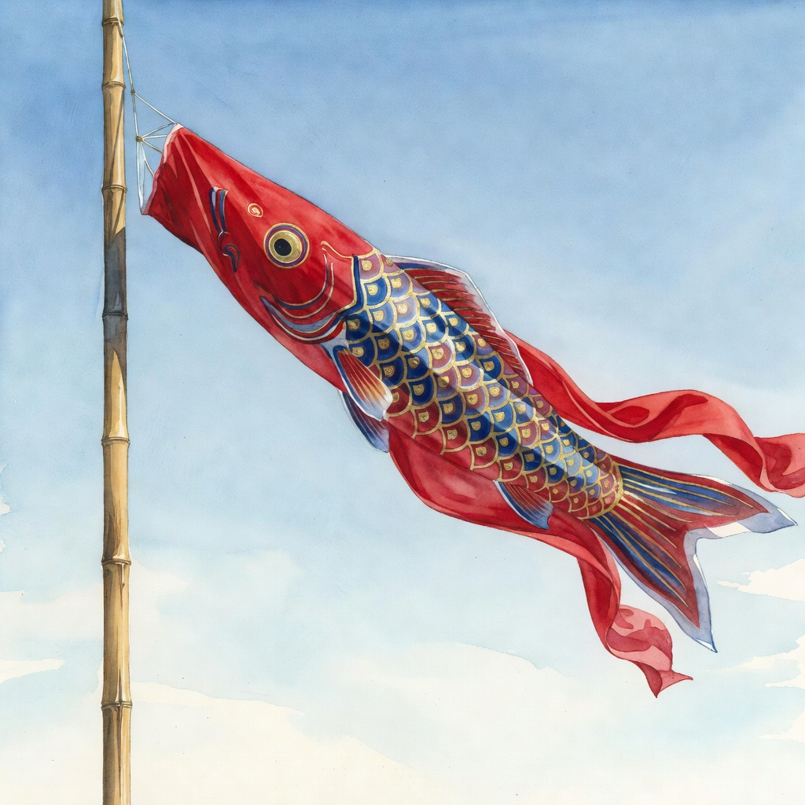

One family's story
Mei's first kanji, and the streamer that watched it happen.
The Tanaka family joined Ryūmon when Mei was four. Her father designed a small indigo carp streamer — the same colour as the one his own grandfather flew for him. Over the year, they logged 47 milestones: the first time she wrote her name in hiragana, the day she counted to one hundred, the afternoon she finally rode her bike down the hill without help.
47 milestones logged in one year, each with a photo and a grandparent's note.
3 generations on one family page — Osaka, Sapporo, and Sendai.
On May fifth, Mei's streamer flew at full height — and the family watched the year play back together.